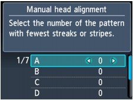
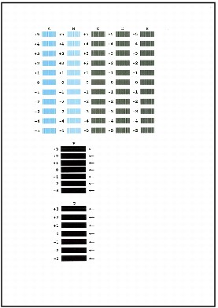
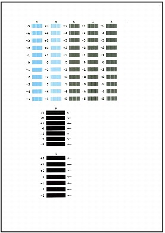
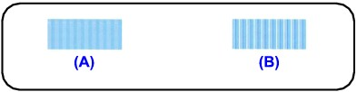
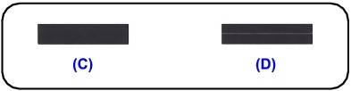
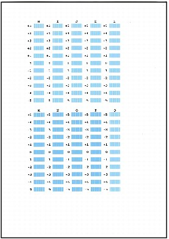
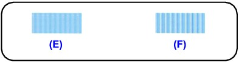
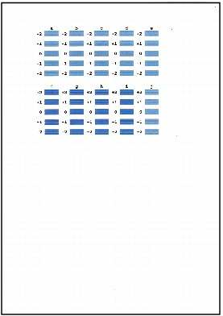
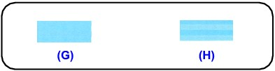

This section describes how to align the Print Head manually.
If the results of Automatic Print Head Alignment are not satisfactory, follow the procedure below to perform Manual Print Head Alignment to precisely align the Print Head.
For details on performing Automatic Print Head Alignment, refer to Routine Maintenance.
 Note
Note-
The print head alignment pattern is printed in black and blue only.
-
Make sure that the machine is turned on.
-
Load three sheets of A4 or Letter-sized plain paper in the Cassette.
-
Open the Paper Output Tray gently.
-
Press the Setup button.
-
Select Maintenance, then press the OK button.
-
Use the

 button to select Manual head alignment, then press the OK button.
button to select Manual head alignment, then press the OK button.The confirmation screen is displayed.
Note-
To confirm the current setting, select Print the head alignment value and print the pattern.
-
-
Use the
button to select Yes, then press the OK button.The print head alignment pattern is printed.
 Important
Important-
Do not open the Scanning Unit (Cover) while printing is in progress.
-
-
When Did the patterns print correctly? is displayed, confirm that the pattern is printed correctly, use the
button to select Yes, then press the OK button.The input screen for the head position adjustment values is displayed.
 -
Check the printed patterns, and use the

 button to input the number of the pattern in column A that has the least noticeable vertical streaks.Note
button to input the number of the pattern in column A that has the least noticeable vertical streaks.Note-
If it is difficult to pick the best pattern, pick the setting that produces the least noticeable vertical white streaks.
(A) Less noticeable vertical white streaks
(B) More noticeable vertical white streaks
-
-
Repeat the same procedure until you finish inputting the pattern number for columns B to G, then press the OK button.
For the column F and G, pick the setting pointed by an arrow that produces the least noticeable horizontal streaks.
Note-
If it is difficult to pick the best pattern, pick the setting that produces the least noticeable horizontal white streaks.
(C) Less noticeable horizontal white streaks
(D) More noticeable horizontal white streaks
-
-
Confirm the displayed message and press the OK button.
The second pattern is printed.
Important-
Do not open the Scanning Unit (Cover) while printing is in progress.
-
-
Check the printed patterns, and use the
button to input the number of the pattern in column H that has the least noticeable vertical streaks.Note-
If it is difficult to pick the best pattern, pick the setting that produces the least noticeable vertical white streaks.
(E) Less noticeable vertical white streaks
(F) More noticeable vertical white streaks
-
-
Repeat the same procedure until you finish inputting the pattern number for columns I to Q, then press the OK button.
-
Confirm the displayed message and press the OK button.
The third pattern is printed.
Important-
Do not open the Scanning Unit (Cover) while printing is in progress.
-
-
Check the printed patterns, and use the
button to input the number of the pattern in column a that has the least noticeable horizontal streaks.Note-
If it is difficult to pick the best pattern, pick the setting that produces the least noticeable horizontal white streaks.
(G) Less noticeable horizontal white streaks
(H) More noticeable horizontal white streaks
-
-
Repeat the same procedure until you finish inputting the pattern number for columns b to j, then press the OK button.
Manual Print Head Alignment is complete.